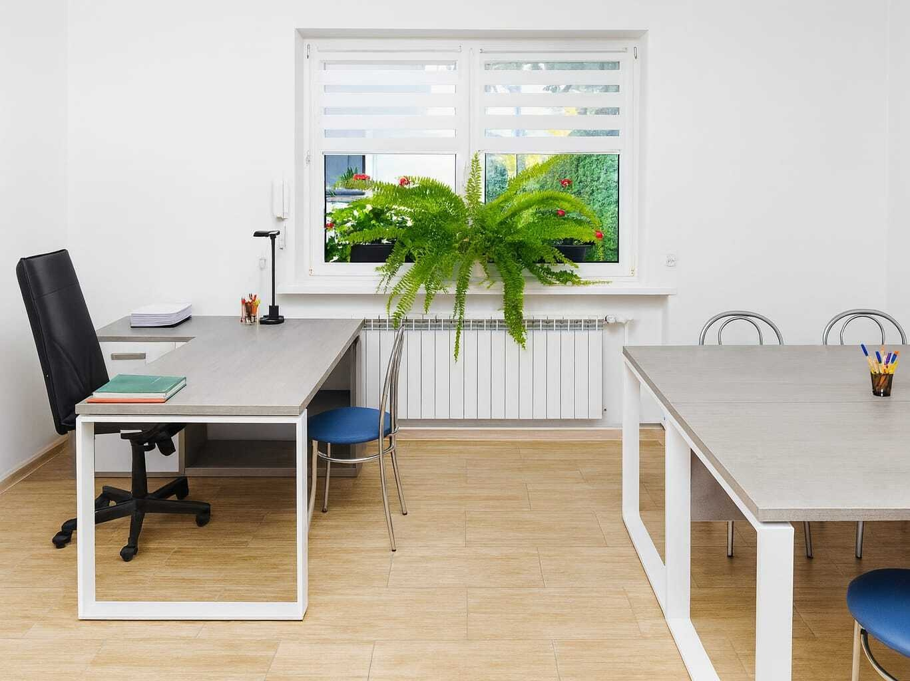
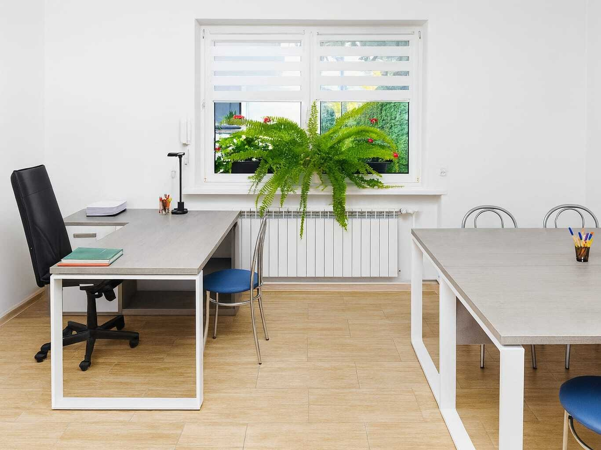
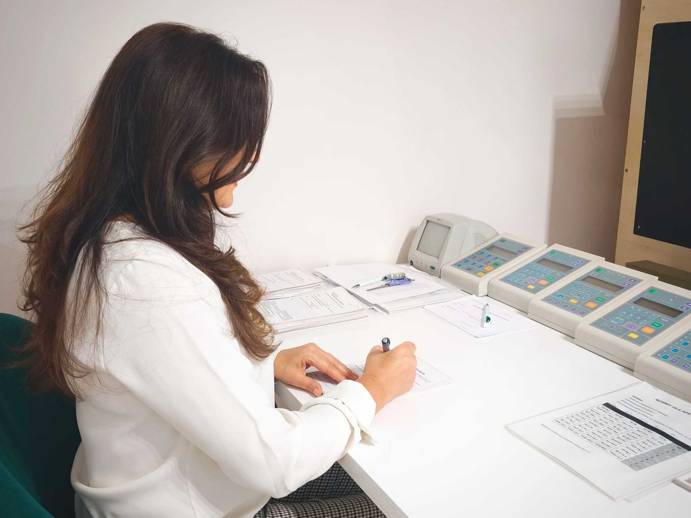
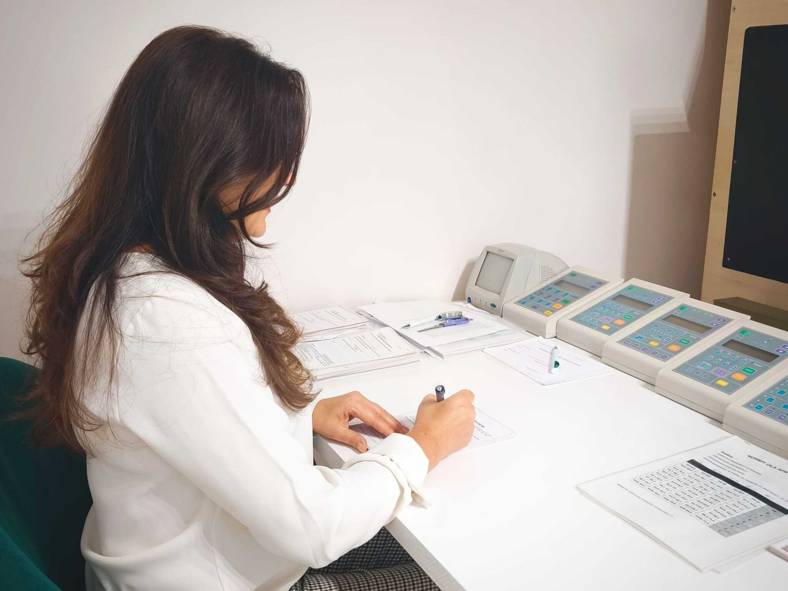

O nas
Nasza firma działa nieprzerwanie od 2007 roku, oferując profesjonalną
diagnostykę psychologiczną związaną z orzecznictwem.
Posiadamy uprawnienia do wykonywania badań psychologicznych kierowców
(psychotechnicznych) oraz osób ubiegających się o pozwolenie na broń
palną i ją posiadających.
Oferujemy również wsparcie psychologiczne dla osób w kryzysie i trudnej
sytuacji życiowej. Pracujemy w atmosferze empatii, zrozumienia i poczucia
bezpieczeństwa, podchodząc indywidualnie do każdej osoby.
Nie wiesz, jakiej pomocy potrzebujesz?
Zadzwoń lub napisz – chętnie pomożemy.
 

 
